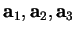
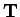
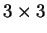
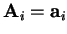
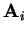

One can generate lattice vectors of the cell and atomic positions inside the cell from scratch. The initial B-option menu is this:
========= CHOOSE AN OPTION:
1. Number of species: <===== undefined
3. Basic translations of the PRIMITIVE CELL <===== undefined
------- Extention matrix {cell -> supercell} ------
5. Specify directly
| 1 0 0 |
IJ(i,j)= | 0 1 0 |, ext= 1
| 0 0 1 |
------- g e n e r a l s e t t i n g s --------
Or. Move atoms closer to origin: NO
XY. Produce <geom.xyz> file after every change for Xmol
Hs. H atoms to be added to <geom.xyz> file: NO
An. [For input] Coordinates are specified in: <Angstroms>
Bb. Set the size of the breeding box for visualisation
>>>>> Current setting for the breeding box: <<<<<
[ 0... 0] x [ 0... 0] x [ 0... 0]
>>>>> extension = 1, # of atoms= 0
Q. Quit: return to the previous setting (if exists)
You must first specify all the data in ``undefined'' fields. Start from the option 1 and specify the primitive unit cell information. New options will appear that require additional information. The primitive lattice vectors

are specified either manually or from the list, both to be found in the following menu:-------------------------
----- Choose one Bravais lattices: ------
-------------------------
0.Manually
1.Triclinic system
2.Monoclinic system. Simple lattice
3.Monoclinic system. Side-centered lattice
4.Orthorhombic system. Simple lattice
5.Orthorhombic system. Fcc-1 lattice
6.Orthorhombic system. Fcc-2 lattice
7.Orthorhombic system. Bcc lattice
8.Tetragonal system. Simple lattice
9.Tetragonal system. Bcc-1 lattice
10.Tetragonal system. Bcc-2 lattice (diff.setting)
11.Cubic system. Simple lattice
12.Cubic system. Bcc lattice
13.Cubic system. Fcc lattice
14.Rhombohedral system.
15.Hexagonal system
The cell you want to construct may consist of several primitive cells
with lattice vectors

is the
transformation (extention) matrix consisting only of integer numbers. By default, the extention matrix is the unit matrix, i.e.
. However, using options 4 or 5 from the B-option menu, the matrix can be specified either directly (option 4) or by specifying the vectors
(option 5). In the latter case the matrix is calculated and it is checked if it consists of integers only.
Finally, the unit cell is generated in option 7. If you leave
the B-option menu by pressing Q (and Enter), the main menu
of tetr will appear, so that you can modify your setting,
add  -points and then save them in the format of your
choice.
-points and then save them in the format of your
choice.